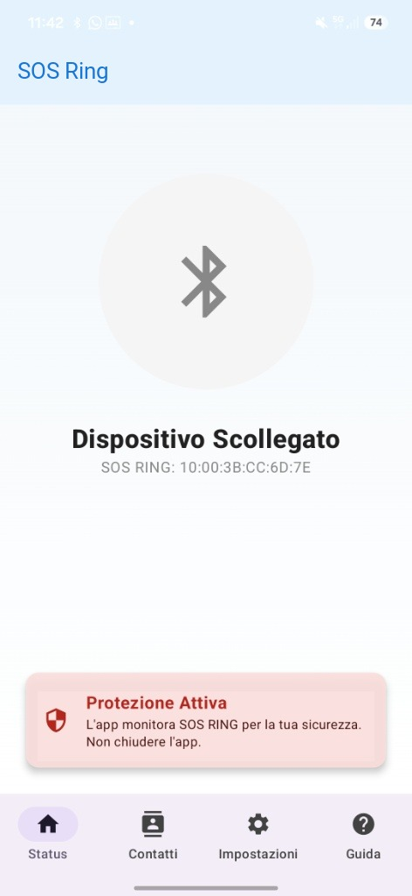
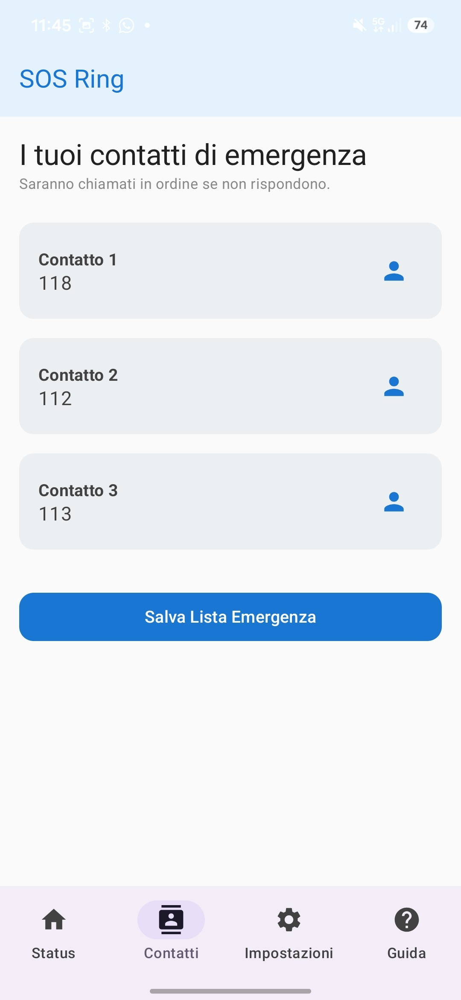
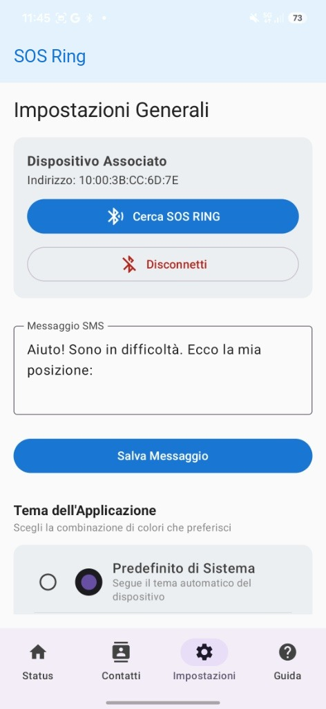
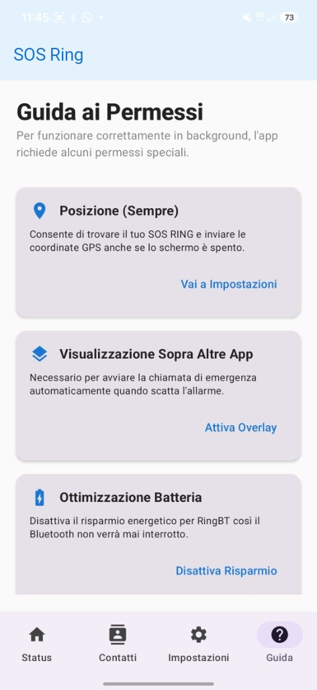

Un anello smart per la sicurezza connesso allo smartphone, basta un click per inviare GPS, SMS e chiamate a 3 contatti preimpostati in caso di emergenza.
Progettato per funzionare in modo naturale, senza complicazioni o falsi allarmi.
Si collega al tuo smartphone via Bluetooth a basso consumo, garantendo batterie durature e connessione stabile.
Sull'app dedicata scegli le 3 persone di fiducia da avvisare in caso di necessità con messaggi personalizzati.
Basta tenere premuto l'anello per 3 secondi. Il tempo ideale per evitare tocchi involontari ed essere sicuri.
L'app fa partire immediatamente le chiamate e invia le notifiche ai contatti con la tua posizione.
Un'interfaccia intuitiva sviluppata dal nostro team e un sistema di protezione sempre attivo in background.
Guarda il cortometraggio realizzato per mostrare il funzionamento di SOS Ring nella vita reale.




Nato nei laboratori scolastici, SOS Ring unisce elettronica indossabile e sviluppo software mobile con un unico grande obiettivo: offrire uno strumento concreto per la sicurezza personale.
Potrai indossare il prototipo dell'anello, provare l'applicazione Android e testare le simulazioni di emergenza in tempo reale.